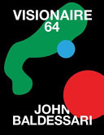

Visionaire No. 64: Art, Baldessari Red Edition
Publication Details
About This Book
In Henry Joost and Ariel Schulman's short film A Brief History of John Baldessari, the world-renowned conceptual artist suggests that he will be best remembered as "the guy who put dots over people's faces. " Baldessari recalls: "I felt like it [the dot] leveled the playing field"--surely an ironic claim to fame in an age of self-obsession and self-celebration. Especially from the early Renaissance, when mirrors became more readily available, through today--an age of constant surveillance in which nearly every pedestrian carries some form of camera--the auto portrait has become an inevitability that, to varying degrees, finds its way into the practice of many working artists.
For its 64th issue, Visionaire invites a roster of contemporary actors, entertainers and personalities to contribute a self-portrait. The participants include artists Ai Weiwei and Ed Ruscha; models Gisele Bundchen and Kate Upton; actors Scarlett Johansson and James Franco; singer Miley Cyrus; filmmaker Pedro Almodovar; fashion designers Kate and Laura Mulleavy (Rodarte) and Riccardo Tisci (Givenchy); athlete Lionel Messi, and many more. Their self-portraits are printed in black and white, and then silkscreened with shapes and colors created by Baldessari.
The resulting collection of images offers a snapshot of contemporary iconography, bridging technology and craftsmanship, high art and pop culture, digital and analogue, new and old. Visionaire No. 64: Art is available in three different editions, each themed by a color, and featuring a different selection of contributors.
All of the editions are presented in a beautifully printed cloth box. The red edition includes contributions by James Franco, Miley Cyrus, Marina Abramovic, Ranveer Singh, Yuna Kim, Karlie Kloss, Pedro Almodóvar, Drew Barrymore, G-Dragon and Ed Ruscha.